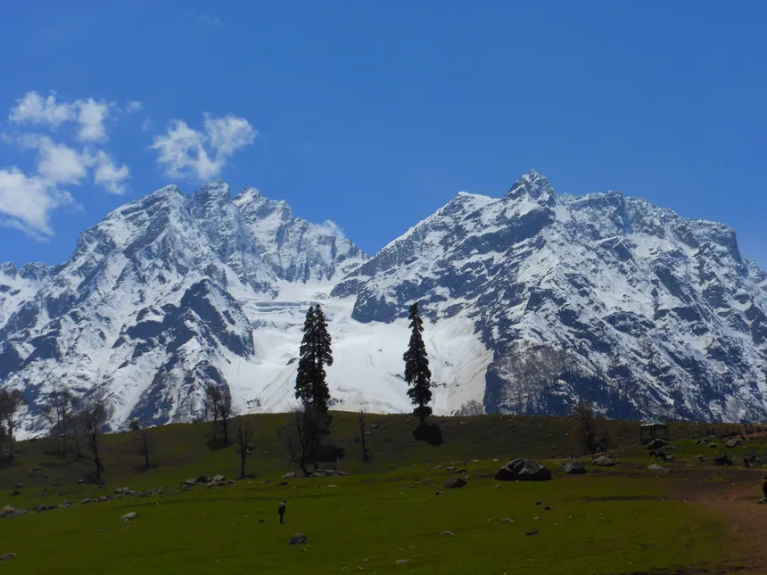

Sonamarg, as the name suggests, is famous as the ‘Meadow of Gold’. An endless stream of stunning flowers and
undulated trekking routes are its attractions.
Sonamarg has to be on every visitor’s list of unique places to visit in Kashmir in winter for its mesmerizing
aura and breathtaking views.
The best season to visit Kashmir would be in summer i.e. May-June when the valley is blooming with variegated
flowers.
June to October, and for snow December & January would be the best
Trekking, Camping and nature walks